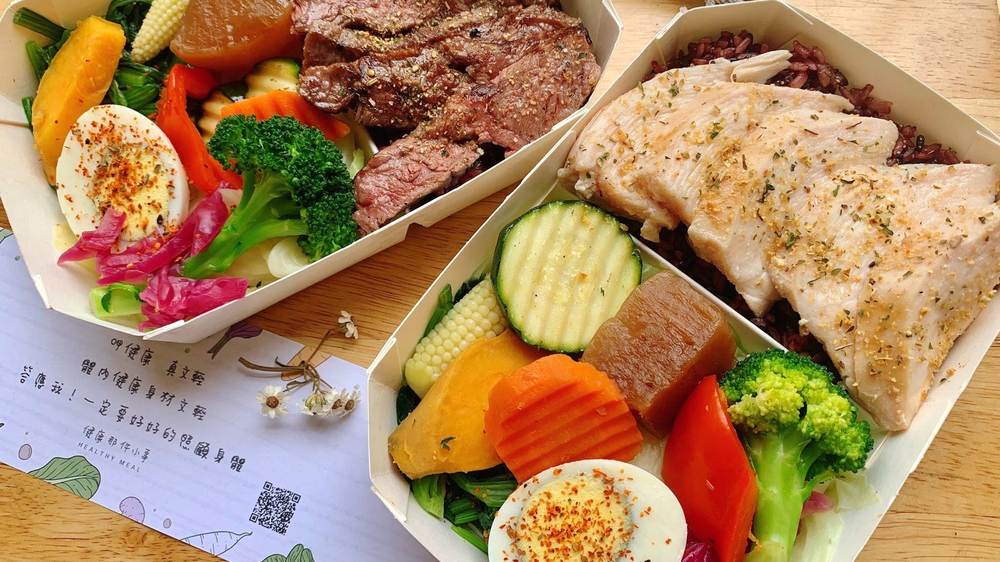

案例影像


這不是一個從零開店的專案，而是既有健康餐品牌的菜單與營運升級。傑弗德從紅藜麥玉米飯、主餐、湯品、醬料與醃料著手，同步整理中央廚房及門市製程，讓產品差異、執行效率與多店複製能一起被考量。

品牌已有健康餐盒與湯品產品線，需要在既有基礎上優化菜單、降低人事成本並規劃自有中央廚房；原有主食也需要更有特色，同時減少各門市製作時對個人手感的依賴。
菜單升級不能只增加新菜，而要同時處理產品、製程、中央廚房與門市執行。透過主食、主餐與湯品研發，以及調味粉、醬料和醃料的整合，建立較容易複製的操作方式。
專案已完成或正在進行原有菜單優化、新菜打樣、製程及中央廚房方向整理，讓產品差異與營運效率能被放進同一套升級規劃中。尚未上線的產品不視為已正式推出。
01 ／ 案例背景
健康那件小事是來自雲林的連鎖健康餐盒品牌，公開菜單可見雞胸、雞腿、鮭魚、牛肉、打拋豬、素食餐盒、燉湯與果醋等產品線。這次合作是在品牌既有產品與門市基礎上進行升級，傑弗德參與的是菜單、製程與營運方向，而不是從零建立品牌或開店。
02
表面上的需求是更新菜單、增加產品特色；真正要解決的，是新品能否進入中央廚房與各門市，並在不同人員操作下維持一致。若只完成一道好吃的新菜，卻沒有同步整理備料、調味與製程，就無法回應多店營運、人力與複製需求。
03
04
為什麼：品牌希望讓主食更有特色，使健康餐盒不只依靠主菜變化建立產品差異。
影響：研發紅藜麥玉米飯，將主食納入菜單升級與產品辨識的規劃中。
為什麼：既有菜單升級需要同時處理餐盒主體與搭配產品，而不是只調整單一品項。
影響：研發內容包含法式紅酒板腱牛排、醬燒雞腿／梅花豬、白醬濃湯及義式番茄雜菜湯；實際上線狀態須確認後才對外表述。
為什麼：各門市若高度依賴現場人員自行調味，產品一致性、訓練時間與人力需求都較難控制。
影響：將部分調味整理為青蔥松露醬、蜂蜜味噌醬、韓式醬燒醬、醬燒油蔥醬，以及匈牙利紅椒、味噌蜂蜜等醃料，降低門市現場的操作難度。
為什麼：多店使用的產品，必須同時考量中央製備、門市保存、操作步驟與現場人力，不能只看試作品的完成度。
影響：在新菜打樣的同時整理製程與自有中央廚房方向，思考如何用產品和流程共同形成較不容易被複製的營運門檻。
05
06
從原有健康餐與湯品基礎上整理升級方向。
進行紅藜麥玉米飯、主餐與湯品打樣。
將部分調味轉為較容易操作與複製的形式。
同步考量中央廚房、門市保存、操作與人力需求。
以產品和製程共同建立競爭門檻。
案例影像
07 ／ 成果
專案已完成或正在進行原有菜單優化、新菜打樣、製程與中央廚房方向整理。核心改變是把產品差異與門市執行放在同一個升級流程中思考，而不是只增加幾道新品。
以上為質性觀察與階段性成果說明，實際執行內容依合約範圍為準，不代表對特定營業額、獲利或回本時間的保證。
如果你正在準備開店、轉型，或發現原本有效的方法逐漸失去作用，我們可以先從釐清問題開始。